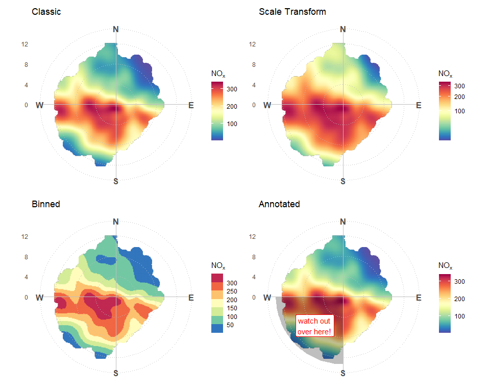

The goal of ggopenair is to bridge the gap between the data analysis functions of openair and the flexibility of ggplot2. One of the key strengths of ggplot2 over lattice is that it allows plots to be manipulated after they are created, which allows for a much more flexible plotting experience. ggplot2 is also being actively developed and extended, which ggopenair can take advantage of.
Installation
You can install the development version of ggopenair from GitHub with:
# install.packages("remotes")
remotes::install_github("jack-davison/ggopenair")Preview
A more thorough overview of ggopenair can be found on the package website: https://jack-davison.github.io/ggopenair/.

Code of Conduct
Please note that the ggopenair project is released with a Contributor Code of Conduct. By contributing to this project, you agree to abide by its terms.